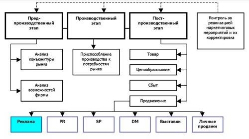

Что такое реклама? Рассмотрим некоторые определения рекламы, предлагаемые разными авторами:
- Реклама (Advertising): Любая, оплаченная конкретным спонсором, форма неличного представления и продвижения идей, товаров и услуг. («Основы маркетинга». Котлер, Армстронг, Сондерс, Вонг)
- Реклама: это неперсонифицированная передача информации, обычно оплачиваемая и обычно имеющая характер убеждения, о продукции, услугах или идеях, известными рекламодателями посредством различных носителей. («Современная реклама». Бове / Аренс)
- Реклама: распространяемая в любой форме, с помощью любых средств информация о физическом или юридическом лице, товарах, идеях и начинаниях (рекламная информация), которая предназначена для неопределенного круга лиц и призвана формировать или поддерживать интерес к этим физическому, юридическому лицу, товарам, идеям и начинаниям и способствовать реализации товаров, идей и начинаний. («Сборник законодательных и иных правовых актов и документов о рекламе», 2001 г., вып. 2)
- Реклама: это оплаченная не персонализированная коммуникация, осуществляемая идентифицированным спонсором и использующая средства массовой информации с целью склонить к чему-то аудиторию или повлиять на нее (как-то). («Реклама. Принципы и практика». Уэллс, Бернет, Мориарти)
- Реклама: информация о потребительских свойствах товаров и услуг с целью создания на них спроса. («Рекламная деятельность». Понкратов, Баженов, Серегина, Шахурин)
Обобщив все эти определения, можно сделать вывод, что реклама — это:
- Любая информация о товаре, услуге, идее или начинании, юридическом или физическом лице;
- Как правило, оплаченная;
- С целью формирования и поддержания к ним интереса и способствующая их продвижению на рынке;
- Не персонально ориентированная (не предназначенная для конкретного лица);
- Подающаяся от лица конкретного идентифицируемого рекламодателя;
- Размещенная через СМИ или другие средства распространения рекламной информации.

Таким образом, как видно из схемы, реклама является одной из маркетинговых коммуникаций, направленных на стимулирование сбыта (одного из так называемых «4Р» — «promotion»), находящегося на постпроизводственном этапе маркетинговой деятельности.
Наряду с рекламой, к остальным маркетинговым коммуникациям, направленным на продвижение товара и стимулирование сбыта, традиционно относят PR, SP, DM, выставки и личные продажи, хотя этот список можно продолжить такими коммуникациями, как product placement, спонсорство, событийный маркетинг, коммуникации знаков идентификации товара, его внешнего вида и упаковки, коммуникации на местах продаж и др.
Но каким бы длинным ни был этот список, тем не менее, реклама занимает ведущее место среди всех остальных маркетинговых мероприятий:
- Во-первых, благодаря тому, что на рекламу обычно приходится большая (а иногда и основная) часть всех затрат на маркетинговые мероприятия;
- Во-вторых, потому, что именно реклама обычно сопровождает все остальные маркетинговые коммуникации, при этом рекламная кампания по срокам проведения, формам и направленности обычно согласуется и тесно переплетается с другими маркетинговыми мероприятиями, осуществляемыми в рамках единой маркетинговой стратегии фирмы;
- В-третьих, многие виды маркетинговых коммуникаций либо выросли и развились из самой рекламы.